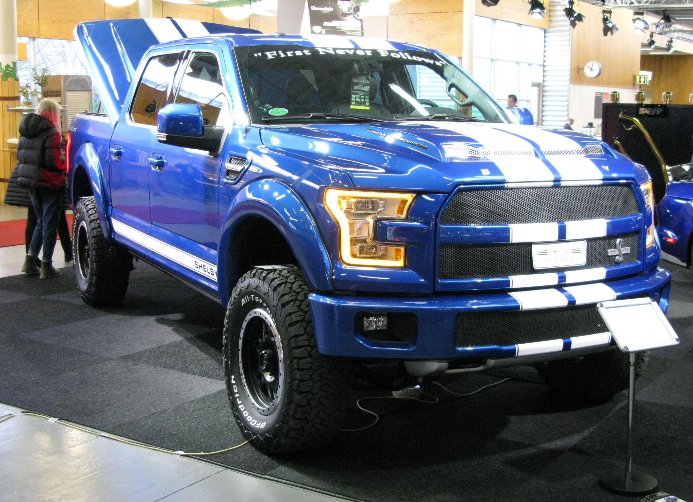
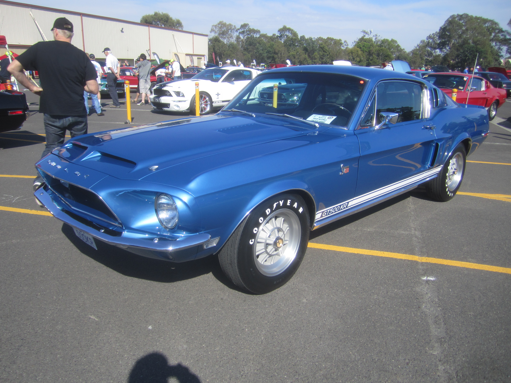

a picture of the Grand Canyon with a river flowing through it.
view: https://luhilions.github.io/wdp-f17-pakr10/image1.html
a picture of a german sheperd standing in a field of grass.
view: https://luhilions.github.io/wdp-f17-pakr10/image2.html
a picture of a 1968 Chevrolet Corvette Stingray, blue.
view: https://luhilions.github.io/wdp-f17-pakr10/image3.html
a picture of a Ford F-150 Super Snake. blue.
view: https://luhilions.github.io/wdp-f17-pakr10/image4.html
a picture of a 1969 Ford Mustang Shelby GT500KR 428 Cobra Jet, black
view: https://luhilions.github.io/wdp-f17-pakr10/image5.html